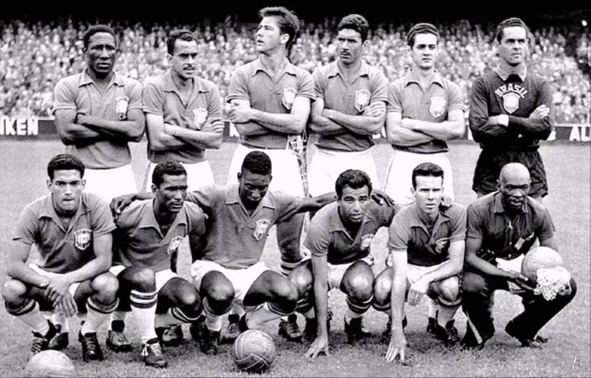
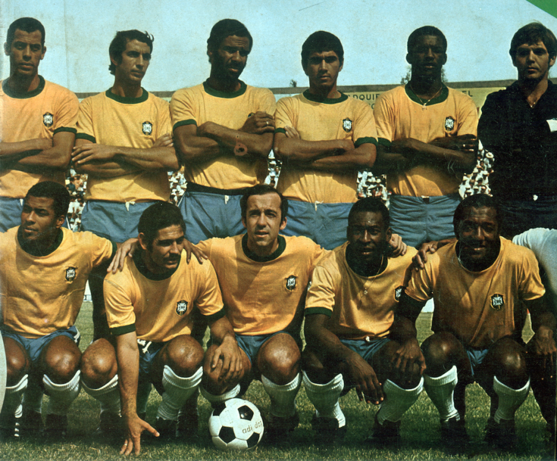
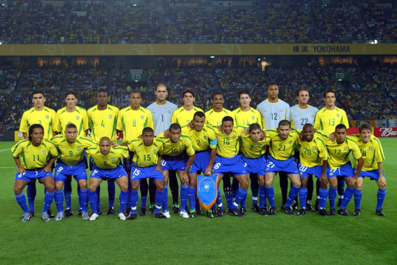
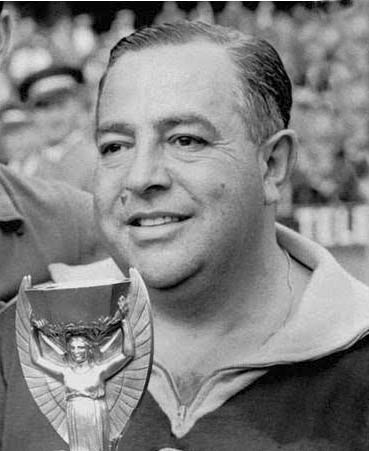
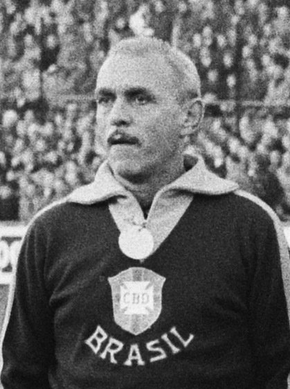
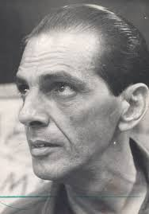
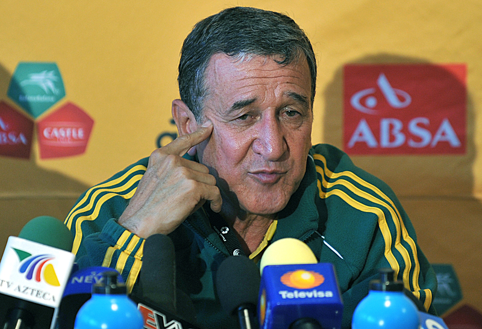
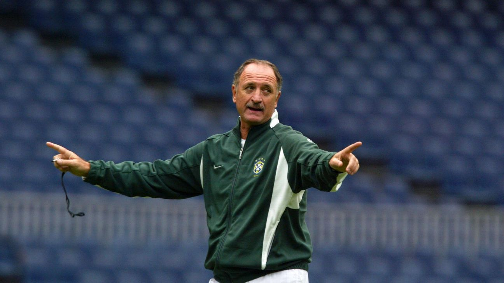

Brasil o país do futebol!
Possuindo apenas 5 copas do mundo e sendo penta campeão mundial, nós somos o maior campeão do maior campeonato do mundo!
Temos os considerados os melhores jogadores de toda a história do futebol, inclusive o nosso falecido Rei Pelé.
O Brasil ganhou a Copa do Mundo da FIFA cinco vezes, sendo o maior campeão da história do torneio. Os anos das conquistas são: 1958, 1962, 1970, 1994 e 2002.
Seleção de 58. O Brasil enfrentou e derrotou a seleção da Suécia por 5 a 2.

Seleção de 62. A grande final foi contra a Tchecoslováquia, vencida pelo Brasil por 3 a 1.

Seleção de 70. O Brasil enfrentou e ganhou da Itália pelo placar de 4 a 1.

Seleção de 94. O Brasil superou a Itália na disputa por pênaltis (3 a 2), após um empate em 0 a 0 no tempo normal e prorrogação.

Seleção de 2002. O Brasil bateu a Alemanha por 2 a 0, conquistando o pentacampeonato.

Tivemos alguns técnicos durante essa jornada longa e desafiadora, como técnicos inteligentes e muito táticos que levaram nossa nação para a vitória do maior campeonato do mundo!
Vicente Feola 58 - O seu grande destaque e marco à frente da equipe foi a aposta e a insistência na convocação de um jovem Pelé, que tinha apenas 17 anos e viajou para a Suécia lesionado.

Aymoré Moreira 62 - O grande destaque sob a direção dele foi Garrincha, que assumiu o protagonismo absoluto da equipe após Pelé sofrer uma lesão grave logo no segundo jogo do torneio. O "Anjo de Pernas Tortas" brilhou com dribles desconcertantes, gols decisivos e foi eleito o melhor jogador daquela Copa do Mundo.

João Saldanha 70 - Ele montou a base tática do tricampeonato, classificando o Brasil de forma invicta nas Eliminatórias.

Carlos Alberto Parreira 94. - O grande destaque de Carlos Alberto Parreira como técnico foi o comando da Seleção Brasileira na histórica conquista do Tetracampeonato na Copa do Mundo de 1994, nos Estados Unidos. O treinador quebrou um jejum de 24 anos sem títulos mundiais do Brasil com um esquema tático sólido, eficiente e pragmático.

Luiz Felipe Scolari 2002 - Luiz Felipe Scolari (Felipão) alcançou seu maior destaque como técnico da Seleção Brasileira ao conquistar o pentacampeonato mundial na Copa do Mundo de 2002, sediada na Coreia do Sul e no Japão.
Sua passagem vitoriosa ficou marcada por alguns pilares e momentos específicos:
A "Família Scolari": Ele foi fundamental para criar um ambiente de forte união e grupo, apelidado de "Família Scolari", protegendo seus jogadores das críticas e focando no aspecto motivacional.
Ajuste Tático: Para dar liberdade aos alas (Cafu e Roberto Carlos) e aos craques do meio para frente (como Rivaldo e Ronaldinho Gaúcho), ele implementou um esquema com uma linha de três zagueiros.
